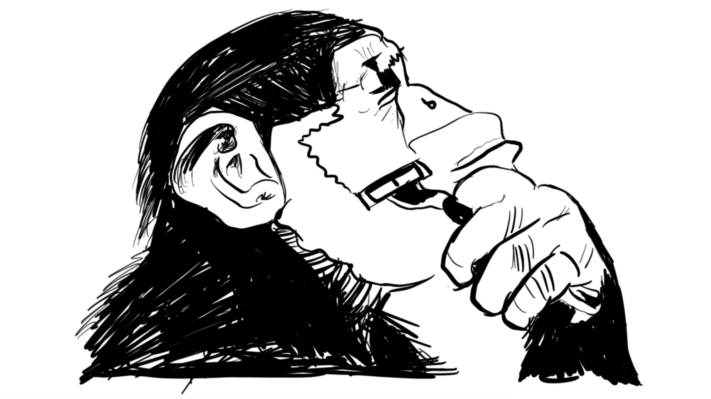

Shaven Primates
Click to play

Also including: Carthorse / Twenty Fathoms Deep / Rich Rainford
The project started in 2016; Mark started getting back into writing music again and put together 10 songs for an album that he wanted to use to get a band together. We went through a range of people, all brilliant in helping form what we are now.
Tom Clark was one of the earliest members as our lead guitarist, he said he liked what we had, then we got Jarod along after finding his profile on Gumtree: “Bored drummer needs some drums to hit” or something like that. Tom’s good(?) friend Josh then came along to help out on keys after we’d had a staggered start, let’s say, and then after a plethora of bassists with various good reasons to drop out (ability, death, time) we found Nick Letellier. We all have a very good part in this group, and it’s starting to look like a very good thing.
We can’t answer a lot of questions right now about the songs themselves; we’re fairly sure you will have some when you hear what we have to show, but the questions will be answered in due course, we promise.
Thanks for reading, and listening.
Mark Elphinstone

Josh is a talented multi-instrumentalist who has fifteen years playing experience and a BA Honours degree in Popular Music. He is a classically trained pianist and acoustic songwriter, specialising in fingerpicking and the more modern styles shown by artists such as Jon Gomm.
He has gigged extensively across the Midlands and Oxford, and has been teaching privately for four years, across all ages and experience levels.
Nick has been playing music for a little over 30 years, starting with the clarinet before coming across a video of the Beatles and realising he much preferred this style of music.
After learning to play bass by copying Paul McCartney, Nick started his own band, The Wild Wings. He gradually expanded his repertoire and instruments, playing with various other bands, including jazz bands, before moving to England and starting all over again several years later.
After being reintroduced to Yes and the genius of Chris Squire, Nick added Progressive Rock to his list of influences, and performed with Yes Please, a leading Yes Tribute band in the UK.

Jarod started playing music as a teenager and hasn't stopped. He started out with trumpet and ended up with a guitar and a mic as the lead singer for "Hendry House Blues Band". As the years went by he realized the music scene in his small town of rural Georgia was in desperate need of percussionists and started to play drums.
As a drummer Jarod has toured most of the East Coast and the Mid West of the United States, working in various genres from country western to reggae and even some hard rock/new metal. After “hopping the pond” he found the Primates and has been working diligently writing and recording the upcoming album.
He holds a Masters Degree from the School of Hard Knocks which he attended while working for a charity to feed starving musicians.

Tom has over ten years playing and gigging experience at both a local and national level playing Electric Guitar and Bass. He has been teaching privately for four years at all age and experience levels, and also teaches at the local Oxford Rockschool for children aged between ten and fifteen.
He holds a BA Honours degree in Popular Music with a first in performance and songwriting. Tom has played everywhere from the O2 Academy in Oxford to King Tuts in Glasgow, with bands covering styles from Progressive Rock to Funk, Blues, Classic Rock covers and more.

Mark's got a story he thinks you all would like to hear.
It's been 36 years in the making.